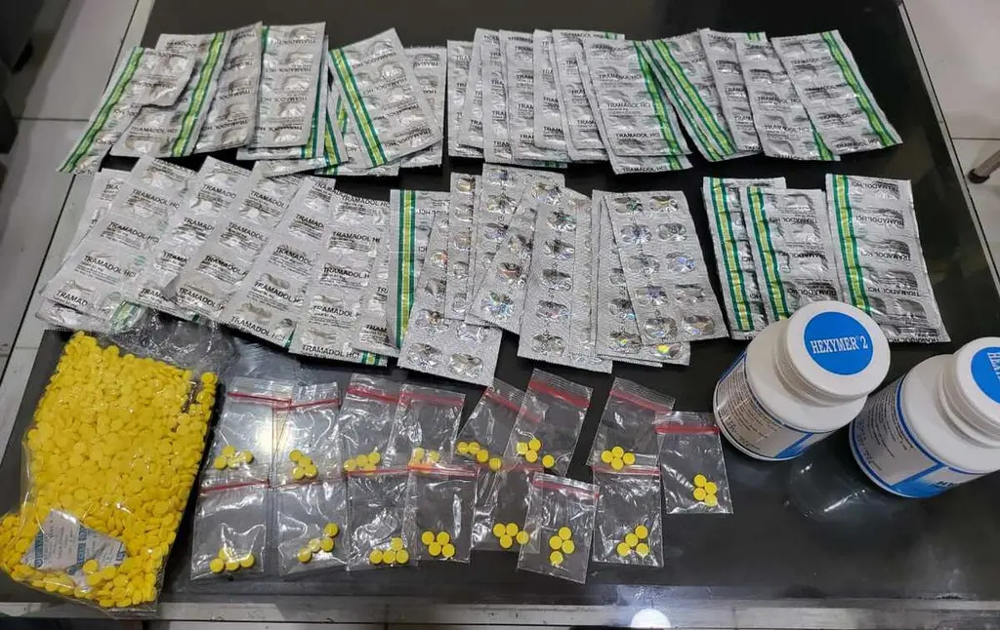

Aktivitas Peredaran Obat Terlarang Diduga Masih Berlangsung di Cisaranten
20 Januari 2026


Sejumlah titik di Kota Bandung diketahui masih menunjukkan aktivitas yang diduga berkaitan dengan peredaran obat keras terlarang, meskipun upaya penertiban tengah dilakukan oleh aparat penegak hukum.
Di tengah intensitas kegiatan Polrestabes Bandung dalam membersihkan peredaran obat ilegal, tim menemukan adanya indikasi aktivitas yang masih berlangsung di wilayah Cisaranten Wetan. Aktivitas tersebut terpantau berlangsung secara terbuka dengan pola yang relatif konsisten.
Menurut pengamatan di lapangan, lokasi yang diduga menjadi titik transaksi berada di sekitar pertigaan Cisaranten, dengan modus yang terbilang sederhana. Beberapa individu terlihat berkumpul di sebuah lapak kaki lima dengan gerobak kosong, yang sekilas tampak seperti tempat istirahat biasa. Namun, dari pergerakan dan interaksi yang terjadi, muncul dugaan adanya aktivitas lain di baliknya.
Beberapa sumber di sekitar lokasi menyebutkan bahwa aktivitas tersebut diduga melibatkan penjualan obat jenis TRAMADOL. Nama yang disebut-sebut terkait aktivitas ini antara lain seorang penjual berinisial M, serta sosok yang dikenal dengan sebutan Bos Dani yang diduga memiliki peran lebih besar dalam distribusi.
Selain itu, terdapat pula informasi dari warga yang menyebutkan adanya dugaan keterlibatan oknum tertentu yang kerap terlihat berada di lokasi tersebut. Meski demikian, informasi ini masih memerlukan pendalaman lebih lanjut dan belum dapat dipastikan kebenarannya secara menyeluruh.
Keberadaan aktivitas semacam ini tentu menimbulkan kekhawatiran di tengah masyarakat, terutama karena berlangsung di ruang publik dan berdekatan dengan aktivitas warga sehari-hari. Diperlukan perhatian serta penelusuran lebih lanjut dari pihak berwenang guna memastikan kondisi di lapangan serta mengambil langkah yang diperlukan.
Masyarakat berharap upaya penertiban dapat dilakukan secara menyeluruh, sehingga peredaran obat keras ilegal dapat ditekan dan lingkungan tetap aman bagi semua pihak.
Kembali ke Beranda